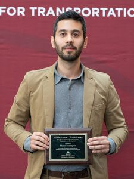
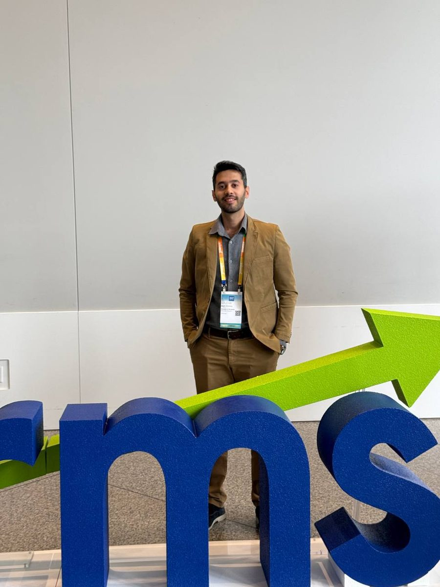

Ph.D. Research · University of Minnesota
Optimizing the few seconds before a traffic light.
My dissertation uses vehicle connectivity and traffic-flow models to make signalized intersections safer and more energy-efficient. It is operations research applied to a real-time system: predict what happens next, optimize a decision, and deliver it to a driver or an automated vehicle fast enough to matter.
Flagship project
A red-light running warning system, tested on public roads
Under the hood: individual driver models (IDM) calibrated by gradient descent with Armijo backtracking, iterative learning control to adapt parameters to each driver, an unscented Kalman filter for state estimation, V2X message decoding (BSM, SPaT, MAP) over UDP, and SUMO/TraCI simulation for testing before field trials.
More research
From one vehicle to a whole city network
Energy-efficient speed control with lane-change prediction
I built a supervised machine-learning pipeline that predicts lane changes from vehicle trajectory data. Its predictions feed an energy-optimal speed controller for connected automated vehicles, so the vehicle plans around the cars that are about to cut in.
Published in Transportation Research Part C (2025).
City-scale energy impact of eco-driving automated vehicles
I modified a link transmission model with dynamic traffic assignment to capture eco-approach automated vehicles in mixed platoons, then predicted how they change energy use and route choice across an urban network.
Presented at INFORMS Annual Meeting 2025. Code
How accurate are our traffic models, really?
I benchmarked traffic-flow models against pNEUMA, a large drone-recorded dataset of real vehicle trajectories. The question was how much each model's accuracy can be trusted when it drives real decisions.
Eco-speed advice for human drivers
I extended the controller to ordinary connected cars. Adaptive driver-model calibration combined with MPC produces speed suggestions that a person can realistically follow, saving energy without automation.
Cost–benefit analysis for MnDOT
I evaluated whether connected-corridor deployment pays off. The analysis showed payback within three years, and it informed MnDOT's deployment decisions.
MnDOT Report 2023-06.
Side projects in OR
Delivery dispatch optimization (2025). I formulated DoorDash-style driver–order assignment as a MIP in Gurobi, plus a greedy heuristic for real-time dynamic assignment.
Pedestrian network design. I optimized which walkways to build to maximize accessibility. Code



Recognition
Awards & talks
-
2024
Matthew J. Huber Award
Given by the UMN Center for Transportation Studies to graduate students for outstanding academic achievement. I received it while I was defending my M.S. thesis, running the MnDOT red-light warning project and teaching a new course. Announcement
-
2023, 2025
TRB Travel Awards (×2)
Transportation Research Board Annual Meeting, Washington, DC.
-
Talks
INFORMS · TRB · ITS Minnesota · CTS
I've presented at the INFORMS Annual Meeting, the TRB Annual Meeting, ITS Minnesota and the UMN Center for Transportation Studies. I took UMN's "Storytelling for Engineers" course on purpose: a model only has impact if you can explain it.
-
2024 – 2025
Course Instructor, Statistics & Probability
I taught probability, distributions, point estimation, regression, Bayesian methods, causal inference and forecasting.
Publications
Selected papers & reports
7 publications: 3 peer-reviewed journal papers, 2 state DOT reports and 2 under review. Full list on Google Scholar.
- Zamanpour, M., He, S., Levin, M. W., & Sun, Z. (2025). Incorporating lane-change prediction into energy-efficient speed control of connected autonomous vehicles at intersections. Transportation Research Part C: Emerging Technologies, 171, 104968.
- He, S., Zamanpour, M., Guo, J., Sun, Z., et al. (2026). Traffic prediction-based individualized driver warning system to reduce red light violations. Journal of Transportation Engineering, Part A: Systems, 152(3). DOI
- Guo, J., Wang, S., He, S., Sun, Z., Zamanpour, M., et al. (2026). Energy-efficient control of connected autonomous electric vehicles in mixed traffic with human-driven vehicles. Transportation Research Record.
- Levin, M. W., Sun, Z., He, S., Zamanpour, M., & Guo, J. (2024). Development and demonstration of a novel red light running warning system using connected V2I technology. Minnesota Department of Transportation, Report 2024-33. Report
- Levin, M. W., Sun, Z., Wang, S., Sun, W., He, S., Suh, B., Zhao, G., Margolis, J., & Zamanpour, M. (2023). Cost/benefit analysis of fuel-efficient speed control using signal phasing and timing (SPaT) data. Minnesota Department of Transportation, Report 2023-06.
Education
Background
- 2023 – Jan 2027
Ph.D., Civil Engineering: Transportation, with an Industrial Engineering minor
University of Minnesota · GPA 3.7 · Coursework: Optimization for ML, Optimization for Data Science, Production & Inventory Systems, Decision Analysis
- 2022 – 2023
M.S., Civil Engineering: Transportation
University of Minnesota · Thesis on optimal speed control for connected and automated vehicles at traffic signals
- 2018 – 2022
B.S., Civil Engineering
University of Tehran · GPA 3.7